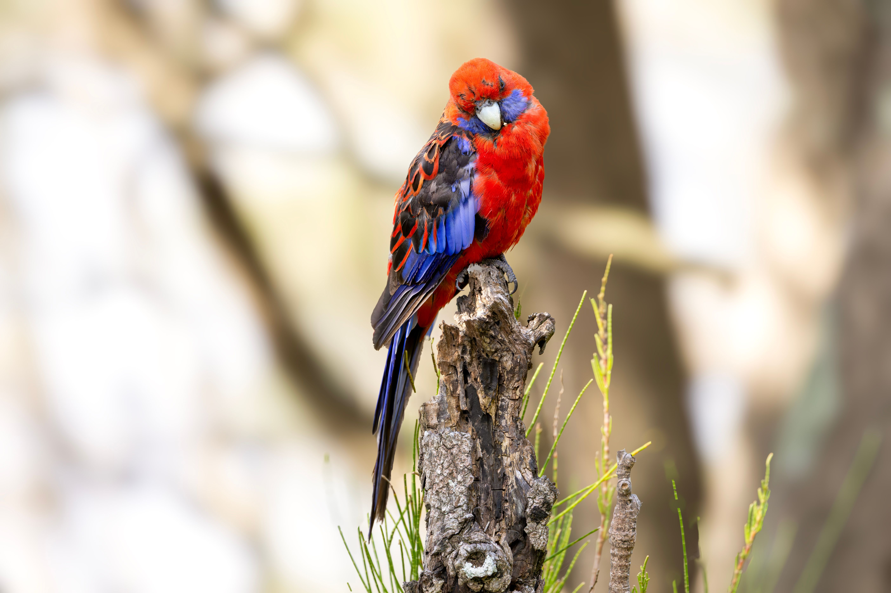

The Crimson Rosella is a colourful eastern Australian parrot with brilliant crimson plumage, blue patches on the cheeks and wings, and a long blue tail in the typical form. Several geographical colour forms occur across its range. It feeds on seeds, fruit and flowers and can occur in forests as well as well-treed urban areas.
Crimson Rosella is best separated from Eastern Rosella by looking at the overall shape and the strongest plumage pattern rather than one small mark. Compared with Eastern Rosella, it has a different combination of colour, proportions and typical behaviour, which becomes clearer when the whole bird is visible. Australian King-Parrot can also resemble it in some settings, but differences in bill shape, tail length, wing pattern, posture or habitat can help narrow the identification. Calls and behaviour are useful supporting clues when plumage is difficult to see, especially for birds that spend much of their time in dense vegetation. Using several features together is more reliable than identifying the bird from a single characteristic.
BirdLife Australia — species profile and distribution, Australian Museum — Australian bird biology and identification, IUCN Red List of Threatened Species — conservation status